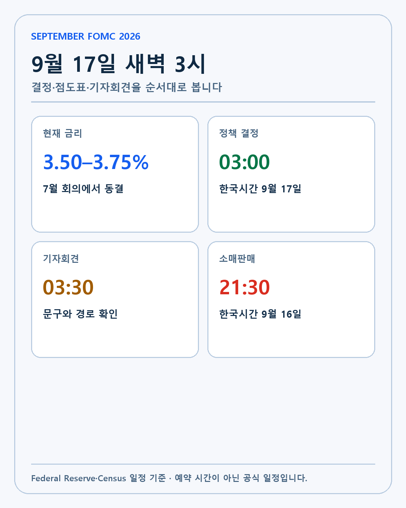
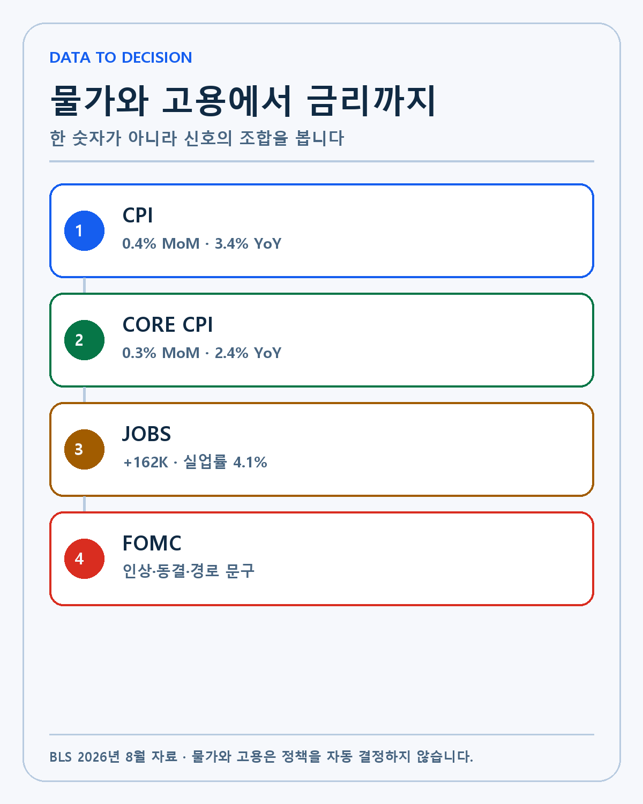
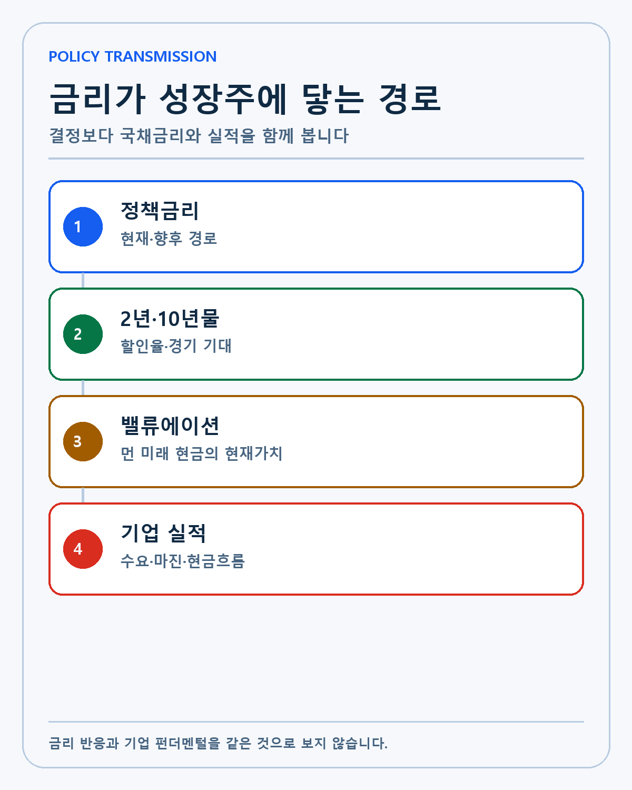
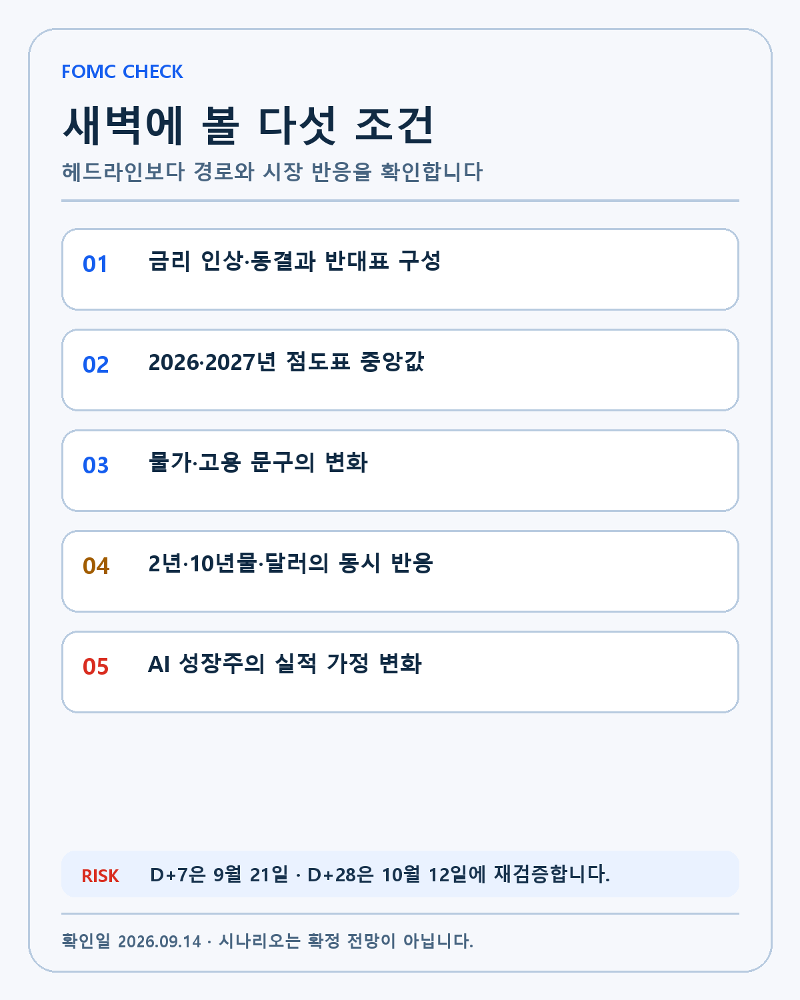

FOMC · DEEP RESEARCH
2026년 9월 FOMC 심층 분석: 3.50~3.75%에서 점도표·물가·고용·성장주를 읽는 법
9월 FOMC의 한국시간, 3.50~3.75% 출발점, CPI·고용·점도표와 성장주 전달 경로를 시나리오별로 분석합니다.
2026년 9월 FOMC는 단순한 금리 발표가 아닙니다. 9월 15~16일 회의 뒤 정책 성명, 경제전망, 점도표와 기자회견이 한꺼번에 공개됩니다. 한국시간으로 결정과 전망은 9월 17일 오전 3시, 기자회견은 오전 3시30분입니다. 같은 날 미국의 8월 소매판매 속보도 먼저 발표됩니다.
시장은 금리를 올릴지 동결할지에 먼저 집중합니다. 그러나 장기 투자자가 실제로 확인해야 하는 대상은 더 많습니다. 위원회 내부의 표결, 2026년과 2027년 점도표 중앙값, 물가와 고용을 묘사하는 문구, 2년물·10년물 국채금리와 달러의 반응, 기업의 매출·마진·현금흐름 가정이 서로 어떤 방향을 가리키는지 봐야 합니다.
이 글은 금리 결과를 맞히기 위한 예측문이 아닙니다. 발표 전에 확인된 기준선을 고정하고, 어떤 결과가 나오면 투자 판단에서 무엇을 바꿀지를 미리 정하는 리서치입니다. 작성·검증 기준일은 2026년 9월 14일입니다.
FACT: 발표 시간과 공개 자료

연방준비제도의 2026년 9월 공식 일정은 회의를 9월 15~16일로 표시합니다. 정책 결정과 경제전망은 미국 동부시간 16일 오후 2시, 기자회견은 오후 2시30분입니다. 9월에는 일광절약시간이 적용되므로 한국은 13시간 빠릅니다. 따라서 한국 투자자가 실제로 화면을 봐야 하는 시각은 17일 오전 3시와 3시30분입니다.
미국 인구조사국의 소매판매 발표 일정에 따르면 8월 속보치는 미국 동부시간 16일 오전 8시30분, 한국시간 16일 오후 9시30분에 나옵니다. 소매판매는 정책 발표보다 약 5시간30분 먼저 공개됩니다.
| 순서 | 공개 항목 | 한국시간 | 투자자가 확인할 질문 |
|---|---|---|---|
| 1 | 8월 소매판매 속보 | 9월 16일 21:30 | 소비가 물가를 감안해도 견조한가 |
| 2 | FOMC 성명 | 9월 17일 03:00 | 금리·표결·문구가 어떻게 달라졌나 |
| 3 | 경제전망·점도표 | 9월 17일 03:00 | 2026·2027년 정책 경로가 이동했나 |
| 4 | 기자회견 | 9월 17일 03:30 | 위원장이 다음 행동의 조건을 무엇으로 제시하나 |
소매판매는 계절조정을 거친 명목 판매액입니다. 가격이 오르면 같은 물량을 사도 매출액이 증가할 수 있습니다. 자동차, 주유소와 외식처럼 변동성이 큰 항목을 제외한 흐름도 함께 봐야 합니다. 당일 소매판매가 위원들의 이미 끝난 정책 토론을 갑자기 바꾼다고 단정할 수는 없지만, 시장 금리와 기자회견의 경기 해석에는 영향을 줄 수 있습니다.
FACT: 7월 회의의 출발점
2026년 7월 29일 FOMC 성명은 연방기금금리 목표 범위를 3.50~3.75%로 유지했습니다. 성명은 경제활동이 견조한 속도로 확장되고 생산성과 자본투자가 강하다고 평가했습니다. 고용은 노동력 증가와 비슷한 속도로 늘었고 실업률은 큰 변화가 없다고 봤습니다.
동시에 인플레이션은 2% 목표보다 높으며 에너지를 포함한 공급 충격이 일부 품목 가격을 올리고 있다고 적었습니다. 중동 충돌에 따른 불확실성도 명시했습니다. 연준의 문제는 수요 과열만이 아닙니다. 금리를 올려도 원유 공급을 바로 늘릴 수 없지만, 높은 에너지 가격이 다른 서비스와 임금 기대에 퍼지는 것을 방치할 수도 없습니다.
표결은 9대3이었습니다. 반대한 Beth Hammack, Neel Kashkari, Lorie Logan은 목표 범위를 0.25%포인트 올리기를 원했습니다. 동결이 다수였지만 세 명의 인상 반대는 위원회 내부의 긴축 압력이 이미 존재했다는 사실을 보여 줍니다. 9월에는 이탈표가 늘어나는지, 인상이 결정되더라도 동결 반대표가 나오는지까지 확인해야 합니다.
FACT: 8월 CPI가 보여 준 두 방향

미국 노동통계국의 8월 CPI 원문에 따르면 전체 CPI는 계절조정 기준 전월 대비 0.4% 상승했고 전년 대비 3.4% 올랐습니다. 근원 CPI는 전월 대비 0.3%, 전년 대비 2.4%였습니다.
한 달 상승의 상당 부분은 에너지에서 나왔습니다. 에너지 지수는 2.1%, 휘발유는 3.9% 올랐습니다. 전년 대비로는 에너지가 16.3%, 휘발유가 27.4% 상승했습니다. 공급 충격이 헤드라인 물가를 끌어올렸다는 연준의 7월 설명과 맞닿습니다.
그렇다고 근원 압력이 사라진 것은 아닙니다. 주거비는 한 달에 0.3% 올랐고 에너지를 제외한 서비스 가격도 쉽게 낮아지지 않았습니다. 반면 전년 대비 근원 CPI 2.4%는 전체 CPI보다 낮고 7월의 2.5%보다 둔화했습니다. 인상 논리와 기다림의 논리가 한 자료 안에 같이 있습니다.
| 8월 물가 | 전월 대비 | 전년 대비 | 해석 경계 |
|---|---|---|---|
| 전체 CPI | +0.4% | +3.4% | 에너지 기여가 큼 |
| 근원 CPI | +0.3% | +2.4% | 기조 물가는 헤드라인보다 낮음 |
| 에너지 | +2.1% | +16.3% | 공급 충격과 지정학 영향 |
| 휘발유 | +3.9% | +27.4% | 월간 CPI 상승의 큰 기여 |
| 주거비 | +0.3% | +3.0% | 서비스 물가의 지속성 확인 |
금리 인상 여부를 CPI 한 줄로 결정할 수 없습니다. 연준이 에너지 충격을 일시적 공급 문제로 볼지, 다른 가격과 기대인플레이션으로 번질 위험을 더 크게 볼지가 중요합니다. 기자회견에서 ‘일시적’이라는 표현보다 어떤 후속 데이터가 필요하다고 말하는지 들어야 합니다.
FACT: 고용은 정책 여력을 남겼습니다
8월 고용보고서는 비농업 고용이 16만2000명 증가하고 실업률이 4.1%로 유지됐다고 밝혔습니다. 최근 12개월 평균 월간 고용 증가는 3만1000명이었으므로 8월은 그보다 강했습니다. 시간당 임금은 전월 대비 0.3%, 전년 대비 3.1% 늘었습니다.
과거 수치도 바뀌었습니다. 6월과 7월 고용은 합계 5만5000명 상향 수정됐습니다. 한 달의 서프라이즈가 아니라 최근 경로 자체가 이전에 알려진 것보다 조금 강해졌다는 의미입니다.
다만 증가 업종은 고르게 퍼지지 않았습니다. 외식업에서 5만9000명, 지방정부 교육에서 4만2000명이 늘었고 정보산업 고용은 감소했습니다. AI 투자와 생산성 증가가 경제 전체의 고용으로 얼마나 확산되는지는 별도의 질문입니다.
고용이 견조하면 연준은 인플레이션을 낮추기 위해 높은 금리를 유지하거나 추가 긴축을 선택할 여유를 가질 수 있습니다. 반대로 산업별 집중과 정보산업 약화가 이어진다면 총량만 보고 과도하게 긴축할 위험도 있습니다. 성명에서 ‘job gains have kept pace with the workforce’ 같은 문구가 바뀌는지 확인할 이유입니다.
FACT: 6월 점도표라는 비교 기준
2026년 6월 경제전망에서 2026년 말 정책금리 중앙값은 3.8%였습니다. 2027년은 3.6%, 2028년은 3.4%, 장기 중앙값은 3.1%였습니다. 2026년 성장률 중앙값은 2.2%, 실업률 4.3%, PCE 물가 3.6%, 근원 PCE 물가 3.3%였습니다.
6월 수치는 9월 예측값이 아니라 비교 기준입니다. 9월 점도표가 2026년과 2027년에 모두 높아진다면 긴축의 높이와 지속기간을 동시에 올린 것입니다. 2026년만 높아지고 2027년은 유지되거나 내려가면 단기 공급 충격 대응에 가까울 수 있습니다.
경제전망은 실제 결과가 아니라 각 위원의 조건부 판단입니다. 점도표에는 이름이 붙지 않으며 위원은 새로운 데이터가 나오면 전망을 바꿀 수 있습니다. 분포와 중앙값을 ‘연준의 약속’으로 번역하면 안 됩니다.
해석: 세 가지 정책 조합
1. 0.25%포인트 인상과 높은 점도표
목표 범위를 3.75~4.00%로 올리고 2026·2027년 점도표가 함께 높아지는 경우입니다. 성명에서 에너지 충격의 확산, 견조한 고용과 소비를 강조할 수 있습니다. 2년물 금리와 달러가 오르고 성장주 할인율 부담이 커질 가능성이 있습니다.
그러나 발표 전 시장이 인상 가능성을 이미 크게 반영했다면 주가 반응은 제한될 수 있습니다. 인상 뒤 위원장이 추가 행동에 신중한 태도를 보이면 장기금리는 오히려 안정될 수도 있습니다.
2. 동결과 매파적 경로
금리는 유지하지만 점도표가 높아지고 추가 인상 가능성을 열어 두는 조합입니다. 정책 결정의 헤드라인은 동결이지만 금융여건은 완화되지 않을 수 있습니다. 시장이 ‘일단 쉰다’를 ‘긴축 종료’로 잘못 읽었다가 기자회견 뒤 되돌릴 수 있습니다.
이 경우 저는 결정문보다 반대표, 점도표와 기자회견의 데이터 조건을 우선합니다. 다음 CPI와 고용, 에너지 가격이 어느 방향으로 움직여야 인상을 피할 수 있는지 확인합니다.
3. 동결과 중립적 경로
에너지 충격을 공급 요인으로 평가하고 근원 물가 둔화를 더 기다리는 경우입니다. 점도표가 6월 수준에서 크게 변하지 않고 추가 긴축을 서두르지 않는다면 국채금리와 달러가 안정될 수 있습니다.
성장주에 자동 호재는 아닙니다. 동결의 이유가 소비와 고용의 급격한 약화라면 기업 매출 가정이 동시에 낮아질 수 있습니다. 할인율과 이익 전망 가운데 어느 쪽이 더 크게 변하는지 봐야 합니다.
전달 경로: 성장주 가격은 왜 다르게 움직이나

정책금리는 은행의 초단기 조달과 금융시장 기대에 직접 닿습니다. 2년물 국채금리는 향후 몇 차례의 정책 경로를 빠르게 반영합니다. 10년물은 장기 성장, 물가, 재정과 국채 공급까지 포함합니다. 같은 FOMC 발표 뒤 두 금리가 다른 방향으로 움직일 수 있습니다.
성장주의 현재 가치는 미래에 벌 현금을 오늘 가치로 할인한 결과입니다. 금리가 높아지면 먼 미래 현금의 현재가치가 더 크게 줄 수 있습니다. 하지만 기업이 예상보다 빠르게 매출과 현금을 키우면 할인율 부담을 상쇄할 수 있습니다.
엔비디아는 AI 시스템 수요와 공급능력, 총마진을 증명해야 합니다. 팔란티어는 상업 고객과 계약이 반복 매출과 현금흐름으로 바뀌는지를 보여 줘야 합니다. 테슬라는 차량·에너지·자율주행의 실제 단위경제성이 중요합니다. 금리는 공통 할인율이지만 각 회사가 이를 견디는 힘은 서로 다릅니다.
반대 논리와 UNKNOWN
시장 기사에서는 9월 인상 가능성을 높게 보는 해석이 많지만 공식 결정은 아직 나오지 않았습니다. 위원들의 최종 표결과 점도표 분포, 기자회견 답변은 UNKNOWN입니다. 이 글에서는 인상을 확정 사실처럼 쓰지 않습니다.
소매판매도 발표 전이므로 결과를 가정하지 않습니다. 강한 소비가 물가 압력으로 이어질지, 가격 효과를 제외하면 약한지 역시 자료가 나온 뒤 판단해야 합니다.
주가의 당일 반응을 FOMC 하나의 인과로 단정하지 않습니다. 같은 시간 기업 뉴스, 옵션 만기, 원유와 지정학, 국채 입찰과 포지션 청산이 함께 작동할 수 있습니다. 정책 발표와 시장 움직임이 동시에 나타났다는 사실과 원인을 구분하겠습니다.
무효화 조건과 확인표

- 금리 결과만 보고 점도표·표결·기자회견을 무시하면 이 분석의 목적이 무너집니다.
- 2년물과 10년물, 달러가 예상과 다르게 움직이면 시장이 다른 경로를 가격에 반영했다는 뜻입니다.
- 금리 충격이 있어도 보유기업의 매출·마진·현금흐름 가정이 유지되면 장기 투자 논리 훼손으로 보지 않습니다.
- 반대로 금리가 안정돼도 고객 수요와 현금창출이 약해지면 완화 기대만으로 투자 논리를 유지하지 않습니다.
- 다음 물가와 고용이 9월 전망에서 크게 벗어나면 점도표를 고정된 미래 금리표로 사용하지 않습니다.
제 판단
이번 회의는 2026년 남은 정책 경로를 다시 정하는 중요한 분기점입니다. 7월의 9대3 표결, 8월 CPI 0.4%와 고용 16만2000명이 인상 논리를 만들 수 있습니다. 전년 대비 근원 CPI 2.4%와 공급 충격의 성격은 기다림의 근거가 됩니다. 어느 한쪽만 보면 결론을 먼저 정하고 자료를 끼워 맞추기 쉽습니다.
저는 FOMC 결과 때문에 장기 보유기업의 기술과 해자가 하루 만에 바뀐다고 생각하지 않습니다. 다만 할인율이 높아질수록 높은 기대를 받는 기업은 실적과 현금으로 더 빨리 증명해야 합니다. 금리 위험을 무시하지 않되 금리만으로 기업을 판단하지 않겠습니다.
D+7인 9월 21일에는 결정, 점도표와 시장 반응을 사전 시나리오와 비교합니다. D+28인 10월 12일에는 국채금리 변화가 다음 CPI·고용과 보유기업 실적 기대에 어떻게 남았는지 확인합니다.
발표 직후 하지 않을 행동
첫 5분의 지수 방향만 보고 회의 전체를 해석하지 않습니다. 성명과 점도표가 동시에 공개되면 자동매매와 포지션 청산이 겹쳐 가격이 빠르게 왕복할 수 있습니다. 기자회견에서 정책 조건이 설명되기 전까지 최초 반응은 완성된 시장 판단이 아닐 수 있습니다.
또한 보유종목의 당일 등락률을 연준 결정의 순수 효과로 계산하지 않습니다. 같은 시간 기업별 공시와 옵션 포지션, 원유와 환율이 함께 움직일 수 있습니다. 발표 전 종가, 결정 직후, 기자회견 종료와 다음 정규장 종가를 구분해 기록하겠습니다.
마지막으로 점도표 중앙값 하나를 목표금리처럼 사용하지 않습니다. 중앙값 아래와 위에 몇 명이 모였는지, 2027년 분포가 어떻게 이동했는지까지 확인합니다. 한 번의 점이 아니라 전망 분포와 실제 데이터의 차이를 추적해야 정책 위험을 장기 투자 판단에 과도하게 반영하지 않을 수 있습니다.
이 글은 경제지표와 장기 투자 과정을 기록한 개인 리서치입니다. 특정 종목이나 금융상품의 매수·매도를 권유하지 않습니다. 정책과 시장 시나리오는 실제 결과와 다를 수 있으며 모든 투자 판단과 책임은 투자자 본인에게 있습니다.
작성 방법
2026년 9월 14일 기준 공식 자료와 공시를 우선하고 사실·회사 전망·시나리오·UNKNOWN을 분리했습니다.
개인 투자 기록이며 특정 종목의 매수·매도를 권유하지 않습니다.